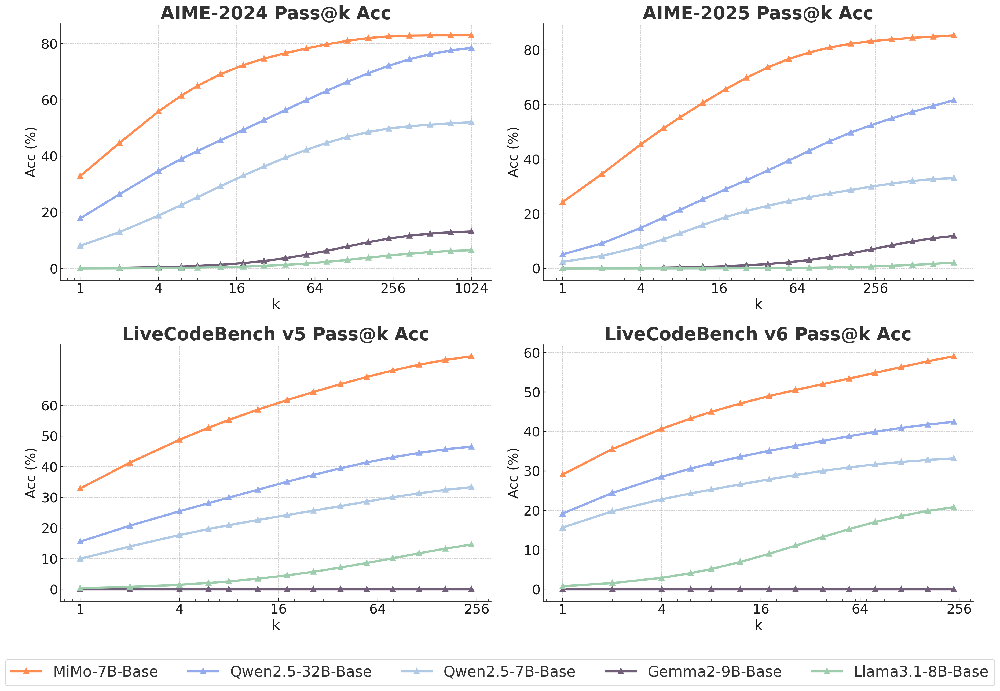

一句话总结:MiMo-7B 是小米 LLM-Core 团队为推理任务而生的 7B 小模型——通过"预训练阶段加密推理 token + 三阶段数据 mix"先把 base 模型的推理潜力(pass@k 上界)拉满,再用 130K 题(100K 数学 + 30K 代码)做 GRPO RL,辅以 IOI 风格的测试难度驱动的代码奖励与简单数据池重采样,7B 在 AIME / LiveCodeBench 上同时打平甚至超过 o1-mini 和 DeepSeek-R1-Distill-32B。
🎯 面试考点(高频):
Seamless Rollout Engine),否则 dynamic sampling 会把 GPU 空转拉到 70%。
① 图说明:论文最核心的"潜力图"。横轴是 $k$(从 1 到 256/1024),纵轴是 pass@k 准确率。pass@k 的语义:对每题采样 $k$ 个答案,只要其中一个正确就算解出 → 衡量模型能不能而非第一次能不能,本质是评估 base 的推理上界。
② 关键数据 / 对照:四个子图,MiMo-7B-Base 的橙线全程在最上方,而且随 $k$ 增大与其它线的差距越拉越开——在 LiveCodeBench v5 / v6 上,$k=256$ 时 MiMo-7B-Base 达到 ~70 / ~60,超过 Qwen2.5-32B-Base(蓝线)5~10 个百分点;Llama-3.1-8B 与 Gemma-2-9B 几乎贴地。AIME 上同理。
③ 启示:这是论文核心论点的"证据图"——RL 不是发动机、是放大器。pass@k 在大 $k$ 处的差距等价于 base 模型潜藏的 reasoning chain 多样性。MiMo 把"预训练阶段刻意提高 reasoning pattern 密度"换成了这条往上爬的橙线,然后 RL 阶段只需要把这些早已"埋在概率分布里的好链路"采样出来 → 解释了为什么 7B 后训练能逼近 32B。也是 7B 路线对抗 R1-Distill-7B(蒸馏)路线的最重要差分。
MiMo: Unlocking the Reasoning Potential of Language Model — From Pretraining to Posttraining. LLM-Core, Xiaomi (arXiv:2505.07608v2 [cs.CL], 5 Jun 2025).
We present MiMo-7B, a large language model born for reasoning tasks, with optimization across both pre-training and post-training stages. During pre-training, we enhance the data preprocessing pipeline and employ a three-stage data mixing strategy to strengthen the base model's reasoning potential. MiMo-7B-Base is pre-trained on 25 trillion tokens, with an additional Multi-Token Prediction objective for enhanced performance and accelerated inference speed. During post-training, we curate a dataset of 130K verifiable mathematics and programming problems for reinforcement learning, integrating a test-difficulty–driven code-reward scheme to alleviate sparse-reward issues and employing strategic data resampling to stabilize training. Extensive evaluations show that MiMo-7B-Base possesses exceptional reasoning potential, outperforming even much larger 32B models. The final RL-tuned model, MiMo-7B-RL, achieves superior performance on mathematics, code and general reasoning tasks, surpassing the performance of OpenAI o1-mini.
MiMo:解锁语言模型的推理潜力——从预训练到后训练。小米 LLM-Core 团队(arXiv:2505.07608v2 [cs.CL],2025 年 6 月 5 日)。
我们提出 MiMo-7B,一个为推理任务而生的大语言模型,在预训练与后训练两个阶段都做了针对性优化。预训练阶段,我们强化数据预处理流水线,并采用三阶段数据混合策略来增强 base 模型的推理潜力。MiMo-7B-Base 在约 25 万亿 token 上预训练,并加入多 token 预测(MTP)作为额外训练目标,以提升性能并加速推理。后训练阶段,我们整理出 13 万条可验证的数学与编程题作为 RL 训练数据,引入由测试难度驱动的代码奖励方案缓解稀疏奖励问题,并采用数据重采样策略来稳定训练。大量评测显示 MiMo-7B-Base 拥有非凡的推理潜力,甚至超过更大的 32B 模型;最终 RL 调优的 MiMo-7B-RL 在数学、代码与通用推理任务上表现卓越,超过 OpenAI o1-mini。
Large language models (LLMs) with advanced reasoning capabilities, such as OpenAI o-series, DeepSeek R1, and Claude 3.7, have achieved remarkable performance in complex tasks like mathematical reasoning and code generation. Through large-scale reinforcement learning (RL), these models develop sophisticated reasoning patterns, including step-by-step analysis, self-reflection and backtracking, enabling more robust and accurate problem-solving capabilities across diverse domains. Currently, most successful RL works rely on relatively large base models, e.g., 32B models, particularly for enhancing code reasoning capabilities. Moreover, it is widely considered that achieving uniform and simultaneous improvements in both mathematical and code capabilities within a small model is challenging.
Nonetheless, we believe that the effectiveness of the RL-trained reasoning model relies on the inherent reasoning potential of the base model. To fully unlock the reasoning potential of language models, efforts must focus not only on post-training but also on pre-training strategies tailored to reasoning. In this work, we present MiMo-7B, a series of models trained from scratch and born for reasoning tasks. Our RL experiments from MiMo-7B-Base show that our model possesses extraordinary reasoning potential, even outperforming much larger 32B models. Additionally, we perform RL training on a cold-started SFT model, resulting in MiMo-7B-RL, which demonstrates superior performance on both mathematics and code reasoning tasks, surpassing OpenAI o1-mini.
Our contributions span three axes. Pre-Training (base model born for reasoning): we optimize the data preprocessing pipeline, enhance text extraction toolkits and apply multi-dimensional data filtering to increase reasoning-pattern density; we employ multiple strategies to generate massive diverse synthetic reasoning data; we adopt a three-stage data mixture strategy and pre-train on $\sim 25$T tokens; we incorporate Multi-Token Prediction (MTP) as an additional training objective for higher performance and faster inference. Post-Training (pioneering reasoning recipe): we curate 130K mathematics and code problems verifiable by rule-based verifiers; we introduce a test-difficulty–driven code reward that turns sparse rewards into dense ones; we implement an easy-data re-sampling strategy to stabilize policy updates in late RL. RL Infrastructure: we develop the Seamless Rollout Engine (continuous rollout + asynchronous reward + early termination) achieving $2.29\times$ faster training and $1.96\times$ faster validation, and we add MTP support to vLLM with hardened robustness.
Summary of evaluation results. MiMo-7B-Base outperforms SoTA open-source models of comparable size and even matches a 32B baseline in pass@k reasoning curves; on BBH it reaches 75.2 and on SuperGPQA it handles graduate-level questions strongly. MiMo-7B-RL-Zero (RL directly from base) already surpasses the RL performance of a 32B base on both math and code. The final MiMo-7B-RL scores 55.4 on AIME 2025 (+4.7 over o1-mini), significantly outperforms o1-mini on LiveCodeBench v5 and v6, and still keeps competitive general performance.
具备高级推理能力的大语言模型(LLM)——例如 OpenAI o 系列、DeepSeek R1 与 Claude 3.7——在数学推理与代码生成等复杂任务上取得了显著成绩。通过大规模强化学习(RL),这些模型发展出步步分析、自我反思与回溯等成熟的推理模式,可以在不同领域稳健而准确地求解问题。目前大多数成功的 RL 工作都依赖于较大的 base 模型(如 32B),尤其是为了增强代码推理能力;并且业内普遍认为在小模型上同时、均匀地提升数学与代码能力是很难的。
然而,我们相信"用 RL 训出的推理模型"的有效性,本质上依赖 base 模型自身的推理潜力。要充分解锁语言模型的推理潜力,努力不能只放在后训练上,还必须把专门针对推理的预训练策略纳入考量。本文提出 MiMo-7B 系列模型——从零开始训练、为推理任务而生。我们对 MiMo-7B-Base 做的 RL 实验显示,模型潜力非凡,甚至胜过远大于它的 32B 模型;我们另外在冷启动的 SFT 模型上做 RL,得到 MiMo-7B-RL,在数学与代码两类推理任务上都表现优异,超过 OpenAI o1-mini。
贡献沿三条主线展开。预训练(为推理而生的 base 模型):优化数据预处理流水线,增强文本抽取工具并应用多维数据过滤,提升训练数据中"推理模式"的密度;采用多种策略大规模生成多样的合成推理数据;采用三阶段数据混合策略,在约 25T token 上预训练;引入多 token 预测(MTP)作为附加训练目标,提升性能并加速推理。后训练(开创性的推理配方):整理 13 万道可由 rule-based verifier 验证的数学与代码题作为 RL 数据;引入由测试难度驱动的代码奖励,把稀疏奖励转为密集奖励;实现"易题数据池重采样"策略,稳定后期 RL 的策略更新。RL 基础设施:开发 Seamless Rollout Engine(持续 rollout + 异步 reward + 提前结束),训练加速 $2.29\times$、验证加速 $1.96\times$;同时为 vLLM 增加 MTP 支持并加固稳定性。
评测要点概览:MiMo-7B-Base 优于同等规模(约 7B)的开源 SoTA 模型,pass@k 推理曲线甚至打平 32B baseline;BBH 上 75.2 分;SuperGPQA 上能稳健处理研究生级问题。MiMo-7B-RL-Zero(直接对 base 做 RL)的最终成绩已超过对 32B base 做 RL 的结果。最终 MiMo-7B-RL 在 AIME 2025 上 55.4 分(比 o1-mini 高 4.7),在 LiveCodeBench v5 与最新 v6 上显著胜出 o1-mini,同时通用能力仍具竞争力。
The pre-training corpus integrates web pages, academic papers, books, programming code, and synthetic data. We believe that incorporating more data with high-quality reasoning patterns during pre-training can substantially enhance the reasoning potential of the resulting language model. To this end, we first optimize the natural text preprocessing pipeline to improve quality and, most importantly, reasoning-data density; second, we leverage advanced reasoning models to generate extensive synthetic reasoning data; finally, we implement a three-stage data mixture strategy to maximize reasoning across various tasks and domains.
Better reasoning data extraction. Web pages naturally contain content with high-density reasoning patterns, such as coding tutorials and mathematics blogs, yet commonly used extractors often fail to preserve embedded mathematics equations and code snippets. We develop a novel HTML-extraction tool specially optimized for mathematics content, code blocks, and forum websites. For papers and books, we enhance PDF parsing toolkits to better handle STEM and code content, preserving massive reasoning patterns for subsequent stages.
Fast global deduplication & multi-dimensional filtering. We adopt URL deduplication plus MinHash deduplication across all webpage dumps and complete this global deduplication within a single day. Since dedup is content-agnostic, we then re-balance the final data distribution by multi-dimensional quality scores. Heuristic rule-based filters tend to mis-filter high-quality math/code web pages, so we instead fine-tune small LLMs as data-quality taggers performing domain classification and multi-dimensional quality assessment.
Synthetic reasoning data. We employ multiple strategies to generate diverse synthetic reasoning responses: (1) select STEM content tagged with high reasoning depth and prompt models to develop in-depth analyses; (2) gather mathematics and code problems and prompt reasoning models to solve them; (3) incorporate general-domain queries, particularly creative writing. Notably, unlike non-reasoning data, our preliminary experiments reveal that synthetic reasoning data can be trained for an extremely high number of epochs without overfitting.
Three-stage data mixture. Stage 1: all sources except synthetic reasoning responses; downsample ads / news / job postings and upsample high-value professional content. Stage 2: significantly increase math and code data to $\sim 70\%$ of the mixture (without compromising general language abilities). Stage 3: add $\sim 10\%$ synthetic responses for math, code and creative writing, and extend context length from 8,192 to 32,768. Stages 1–2 use 8K context; only Stage 3 uses 32K. Through this process we build a $\sim$25T-token pre-training dataset.
预训练语料融合了网页、学术论文、书籍、编程代码与合成数据。我们相信在预训练阶段加入更多高质量推理模式的数据,可以大幅提升所得模型的推理潜力。为此:① 优化自然文本预处理流水线,提升数据质量与最关键的"推理数据密度";② 借助先进的推理模型大规模生成合成推理数据;③ 实施三阶段数据混合策略,以最大化模型在多任务多领域的推理表现。
更好的推理数据抽取。网页天然含有高密度的推理内容,如编程教程与数学博客,但常见抽取器往往无法保留页中嵌入的数学公式与代码片段。我们自研了一套 HTML 抽取工具,专门针对数学内容、代码块与论坛页面做优化;对论文和书籍,则增强 PDF 解析工具以更好处理 STEM 与代码内容——为后续处理保留了海量推理模式。
快速全局去重与多维过滤。对所有网页 dump 我们同时做 URL 去重和 MinHash 去重,并通过工程优化把全局去重压在一天之内完成。由于去重对内容质量"无感",随后再用多维质量打分重新平衡数据分布。Heuristic 规则过滤器经常把高质量的数学/代码网页误杀,因此我们改为微调小型 LLM 作为数据质量 tagger,做领域分类与多维质量评估。
合成推理数据。我们用多种策略生成多样的合成推理回答:① 选出被标为"高推理深度"的 STEM 内容,提示模型做深度分析;② 收集数学与代码题,提示推理模型作答;③ 加入通用领域 query,尤其是创意写作。值得注意的是:与非推理数据不同,初步实验显示合成推理数据可以训极多 epoch 而不出现过拟合。
三阶段数据混合。Stage 1:除合成推理回答外的全部来源;对广告、新闻、招聘等低密度内容下采样,对专业领域高价值数据上采样。Stage 2:把数学/代码相关数据显著提到 $\sim 70\%$(且不损害通用语言能力)。Stage 3:再注入 $\sim 10\%$ 数学/代码/创意写作的合成回答,并把上下文从 8,192 扩到 32,768。前两阶段用 8K ctx,只有 Stage 3 用 32K ctx。通过这一流程,我们得到约 25T token 的大规模高质量预训练数据集。
MiMo-7B follows the general decoder-only Transformer architecture, with Grouped-Query Attention (GQA), pre-RMSNorm, SwiGLU activation, and Rotary Positional Embedding (RoPE), similar to Llama and Qwen. Reasoning models often face an inference-speed bottleneck due to lengthy auto-regressive generation, despite the high correlation among consecutive tokens along reasoning paths.
MTP modules. Inspired by DeepSeek-V3, we incorporate Multi-Token Prediction (MTP) as an additional training objective. This lets the model strategically pre-plan and produce representations that facilitate more accurate and potentially faster prediction of future tokens. We implement distinct MTP setups for pre-training and inference: during pre-training we use a single MTP layer (preliminary studies show multiple MTP layers yield no further improvement), while at inference we replicate the pre-trained single MTP layer into multiple identical copies and, with the main model and first MTP layer frozen, fine-tune the new MTP layers for speculative decoding.
MTP inference speedup. On AIME24, the first MTP layer achieves a remarkably high acceptance rate of about $90\%$, while even the third MTP layer maintains an acceptance rate above $75\%$. This enables MiMo-7B to deliver enhanced decoding speed, particularly in reasoning scenarios that require extremely long outputs.
Model & training hyper-parameters. Transformer layers $=36$, hidden dim $=4{,}096$, FFN intermediate dim $=11{,}008$, attention heads $=32$ with $8$ KV groups. Optimizer is AdamW with $\beta_1 = 0.9$, $\beta_2 = 0.95$, weight decay $0.1$, grad-clip $1.0$. Stages 1–2 use seq-len $8{,}192$ with RoPE base $10{,}000$; Stage 3 extends to $32{,}768$ with RoPE base $640{,}000$.
Learning-rate schedule. Stage 1 linearly warms from $0$ to $1.07\times 10^{-4}$ over the first 84B tokens, holds constant for 10.2T tokens, then cosine-decays to $3\times 10^{-5}$ over 7.5T tokens. This rate is held through Stage 2 (4T tokens) and the first 1.5T tokens of Stage 3, then cosine-decays to $1\times 10^{-5}$ over the final 500B tokens. Batch size warms linearly to $2{,}560$ over the first 168B tokens (held through Stage 1–2); in Stage 3 it is fixed at $640$. MTP loss weight is $0.3$ for the first 10.3T tokens, then $0.1$ for the remainder.
MiMo-7B 沿用通用的 decoder-only Transformer 架构,采用 GQA、pre-RMSNorm、SwiGLU 激活和 RoPE 位置编码,与 Llama / Qwen 类似。推理模型常因长链自回归生成而遭遇推理速度瓶颈——尽管推理路径上相邻 token 的相关性很强、可预测性很高。
MTP 模块。受 DeepSeek-V3 启发,我们引入多 token 预测(MTP)作为额外训练目标:让模型策略性地预先规划并生成表示,从而更准确、可能更快地预测未来 token。预训练与推理使用不同的 MTP 设置:预训练阶段只用一层 MTP(初步实验显示多层并无额外收益);推理阶段则把预训练得到的单层 MTP 复制成多份,然后冻结主模型与第一层 MTP,微调新加的 MTP 层,用于投机解码。
MTP 推理加速。在 AIME24 上,第 1 层 MTP 接受率约 $90\%$,第 3 层 MTP 仍保持 $75\%$ 以上的接受率。这让 MiMo-7B 在解码速度上获得明显增益,尤其是在需要超长输出的推理场景。
模型与训练超参。Transformer 层数 $=36$,hidden 维度 $=4{,}096$,FFN 中间维度 $=11{,}008$,attention head 数 $=32$,KV group 数 $=8$。优化器 AdamW,$\beta_1=0.9$、$\beta_2=0.95$、weight decay $0.1$、grad clip $1.0$。Stage 1–2 序列长度 $8{,}192$、RoPE base $10{,}000$;Stage 3 扩到 $32{,}768$、RoPE base $640{,}000$。
学习率调度。Stage 1 在前 84B token 上从 $0$ 线性 warmup 到 $1.07\times 10^{-4}$,然后恒定 10.2T token,再 cosine 衰减到 $3\times 10^{-5}$(7.5T token)。该速率延续到 Stage 2(4T token)与 Stage 3 前 1.5T token,最后在最后 500B token 上 cosine 衰减到 $1\times 10^{-5}$。batch size 在前 168B token 上线性 warmup 到 $2{,}560$,Stage 1–2 保持不变;Stage 3 固定为 $640$。MTP loss 权重前 10.3T token 为 $0.3$,之后降为 $0.1$。
We evaluate MiMo-7B-Base on a wide set of benchmarks spanning language understanding (BBH, MMLU/-Redux/-Pro, ARC, HellaSwag, PIQA), QA (TriviaQA, NaturalQuestions, GPQA, SuperGPQA), reading comprehension (DROP, RACE), mathematics (AIME, GSM8K, MATH), coding (LiveCodeBench, HumanEval(+), MBPP(+), CRUXEval), Chinese (C-Eval, CMMLU) and long-context (RULER).
Upper bounds of reasoning capability. Traditional evaluation methods often underestimate a model's true reasoning potential by relying on single-pass success rates or average performance across multiple samplings. Following Yue et al. (2025), we adopt the pass@k metric — a problem counts as solved if any of $k$ sampled solutions is correct — to better assess the reasoning capacity boundary of different models. As illustrated in Figure 3, MiMo-7B-Base achieves significantly higher pass@k scores than all compared models, including the 32B baseline, across all benchmarks and values of $k$. The gap widens steadily as $k$ increases, particularly on LiveCodeBench, establishing MiMo-7B-Base as a strong base policy for RL training.
General reasoning. On BBH, MiMo-7B-Base scores 75.2, surpassing Qwen2.5-7B by about 5 points. SuperGPQA results further highlight robust performance on graduate-level problems. On DROP it outperforms compared models, showing advanced language understanding.
Mathematics & code. On LiveCodeBench v5 it scores 32.9, far surpassing Llama-3.1-8B and Qwen2.5-7B; on AIME 2024 it scores 32.9, significantly outperforming other comparably sized base models. These results highlight the model's extraordinary problem-solving abilities and its huge potential for complex reasoning tasks.
Long-context comprehension. On RULER, MiMo-7B-Base achieves near-perfect needle-in-a-haystack retrieval across all positions within the 32K window. Beyond pure retrieval, it excels in tasks requiring long-context reasoning — Common Words Extraction (CWE), Frequent Words Extraction (FWE) and Variable Tracking (VT) — and surpasses Qwen2.5-7B in most scenarios. These results validate the efficacy of incorporating diverse high-reasoning-pattern data during pre-training.
我们在大量基准上评估 MiMo-7B-Base,涵盖语言理解(BBH、MMLU/-Redux/-Pro、ARC、HellaSwag、PIQA)、问答(TriviaQA、NaturalQuestions、GPQA、SuperGPQA)、阅读理解(DROP、RACE)、数学(AIME、GSM8K、MATH)、代码(LiveCodeBench、HumanEval(+)、MBPP(+)、CRUXEval)、中文(C-Eval、CMMLU)与长上下文(RULER)。
推理能力的上界。传统评估方法常通过单次通过率或多次采样的均值低估模型的"真实推理潜力"。沿用 Yue 等(2025)的做法,我们采用 pass@k 指标——只要 $k$ 个采样里有任何一个正确,就算解出——以更好地刻画不同模型的"推理能力边界"。如图 3 所示,MiMo-7B-Base 在所有基准与所有 $k$ 上,pass@k 都显著高于所有对比模型,包括 32B baseline。差距随 $k$ 增大而稳步拉开,在 LiveCodeBench 上尤为明显,这奠定了 MiMo-7B-Base 作为后续 RL 训练的"强 base 策略"。
通用推理。BBH 上 MiMo-7B-Base 拿到 75.2,比 Qwen2.5-7B 高约 5 分;SuperGPQA 显示在研究生级问题上仍稳健;DROP 上超过对比模型,体现进阶的语言理解能力。
数学与代码。LiveCodeBench v5 上拿到 32.9,大幅超过 Llama-3.1-8B 与 Qwen2.5-7B;AIME 2024 上同样拿到 32.9,显著优于其它同等规模 base 模型。这些结果凸显 MiMo-7B-Base 非凡的解题能力以及在复杂推理任务上的巨大潜力。
长上下文理解。RULER 上 MiMo-7B-Base 在 32K 窗口内的"针在草堆"检索几乎做到全位置完美。在更进阶的长 ctx 推理任务——CWE(常见词抽取)、FWE(高频词抽取)与 VT(变量跟踪)——上同样表现卓越,大多数场景超过 Qwen2.5-7B。这印证了"预训练阶段加入多样、高质量推理模式数据"策略的有效性。
After pre-training, post-training is implemented on MiMo-7B-Base. Specifically, we develop MiMo-7B-RL-Zero through direct RL from MiMo-7B-Base, and MiMo-7B-RL trained from an SFT version of MiMo-7B. The SFT data combines open-source and proprietary distilled data. To ensure optimal quality and diversity, we implement a three-stage preprocessing pipeline.
First, we eliminate all training queries that have 16-gram overlap with evaluation benchmarks to prevent data leakage. Then we exclude samples with mixed language or incomplete responses. Finally, we cap the number of responses per query at eight, striking a balance between preserving diversity and preventing redundancy. After preprocessing, our final SFT dataset comprises about 500K samples.
SFT hyper-parameters: we fine-tune MiMo-7B-Base with a constant learning rate of $3\times 10^{-5}$ and batch size of $128$. Samples are packed to the maximum length of $32{,}768$ tokens during training.
Later in the report (Discussion §3.6), we further scale SFT data from $\sim$500K to $\sim$6M instances. This substantial expansion materially improves reasoning ability and generalized dialogue capability while preserving (rather than compromising) the model's potential for subsequent RL. Table 6 shows the 6M-SFT model significantly beats the 500K-SFT model on AIME 24/25, MATH500, GPQA Diamond, LiveCodeBench v5 and Alignbench v1.1.
This SFT design serves two purposes: (1) align the base model with the expected answer-extraction format (e.g., \boxed{} for math); (2) provide a strong starting point so that subsequent RL can climb a higher ceiling (MiMo-7B-RL ultimately exceeds MiMo-7B-RL-Zero, which uses only RL on the base).
预训练完成后,我们在 MiMo-7B-Base 上做后训练:① 直接对 MiMo-7B-Base 做 RL,得到 MiMo-7B-RL-Zero;② 先做 SFT,得到 MiMo-7B-SFT,再做 RL,得到 MiMo-7B-RL。SFT 数据由开源数据与自研蒸馏数据混合构成。为兼顾质量与多样性,我们用一条三阶段预处理流水线。
第一步,剔除所有与评测基准存在 16-gram 重叠的训练 query,以防数据泄漏;第二步,排除中英混杂或回答不完整的样本;第三步,对每个 query 最多保留 8 个回答,以在多样性与冗余之间取得平衡。经此处理,最终 SFT 数据集约 50 万条样本。
SFT 超参:学习率恒定 $3\times 10^{-5}$,batch size $128$;训练时把样本 pack 到最大 $32{,}768$ token。
论文后续(§3.6 Discussion)进一步把 SFT 数据从约 50 万扩到约 600 万。这次扩展实质性提升了推理与通用对话能力,而没有削弱后续 RL 的潜力。表 6 显示 6M-SFT 模型在 AIME 24/25、MATH500、GPQA Diamond、LiveCodeBench v5 与 Alignbench v1.1 上显著优于 500K-SFT 模型。
这套 SFT 设计有两个用途:① 让 base 模型对齐到预期的答案抽取格式(例如数学用 \boxed{});② 提供一个更强的起点,让后续 RL 能爬到更高的天花板——最终 MiMo-7B-RL 超过仅在 base 上做 RL 的 MiMo-7B-RL-Zero。
We use two categories of verifiable problems — mathematics and code — to formulate our RL training data. Our preliminary studies demonstrate that high-quality problem sets play a critical role in stabilizing RL training and further enhancing the LLM's reasoning capabilities.
Mathematical data. The math problem set is drawn from open-source datasets and proprietary competition-level collections. To mitigate reward hacking, we use an LLM to filter proof-based and multiple-choice problems. Unlike recent approaches that modify problems to ensure integer answers, we preserve the originals to minimize hacking surface. We also perform global n-gram deduplication and carefully decontaminate against evaluation benchmarks.
Model-based difficulty assessment. We first filter out problems that cannot be solved by advanced reasoning models — identifying problems that are either too difficult or contain incorrect answers. For the remaining problems, we roll out an SFT version of MiMo-7B $16$ times and eliminate problems with pass-rate $> 90\%$. Notably, this removes about $50\%$ of easy problems from the original set. After cleaning, we obtain a math training set of $100$K problems.
Code data. For coding problems we curate a high-quality training set from open-source datasets and our newly collected problem set. We remove problems without test cases; for problems with golden solutions we discard those whose golden solution fails any test; for problems without golden solutions we discard those where no test case can be solved in $16$ rollouts of advanced reasoning models. As with math, we use an SFT version of MiMo-7B to filter out easy problems that pass perfectly in all $16$ rollouts. This rigorous cleaning yields $30$K code problems.
Online judge & reward function. During each RL iteration we evaluate thousands of problems to compute rewards, with each problem potentially containing hundreds of test cases. To improve reward computation efficiency and eliminate GPU idle time, we developed an online-judge environment that enables parallel execution of an extremely high volume of unit tests. We employ only rule-based accuracy rewards: for math, the rule-based Math-Verify library; for code, the test-difficulty–driven reward described next. No additional rewards (such as format reward or length penalty) are incorporated.
我们用两类可验证题——数学与代码——构造 RL 训练数据。前期研究表明,高质量题库对稳定 RL 训练、并进一步增强 LLM 推理能力至关重要。
数学数据。数学题集来自开源数据与自研竞赛级题库。为缓解 reward hacking,我们用 LLM 过滤掉证明题与选择题;不同于"修改题目以保证整数答案"的近期做法,我们保留原题,以减少 hacking 面。我们还对题集做全局 n-gram 去重,并仔细与评测基准做去污染。
基于模型的难度评估。第一步先过滤掉"先进推理模型也解不出"的题——它们要么过难、要么答案有误。第二步,对剩下的题,用 SFT 版的 MiMo-7B rollout 16 次,剔除 pass-rate $>90\%$ 的题。值得一提的是,这一步从原始题集里筛掉了约 $50\%$ 的"过简单"题。清洗后,数学训练集为 10 万题。
代码数据。代码题集同样从开源数据与自研题库整理。剔除"无测试用例"的题;对"有金标解"的题,如果金标解过不了任一测试,就剔除;对"无金标解"的题,如果先进推理模型 16 次 rollout 都没通过任一测试,就剔除。和数学一样,我们用 SFT 版的 MiMo-7B 过滤掉"16 次 rollout 都全过"的过易题。严格清洗后,代码训练集为 3 万题。
Online judge 与奖励函数。每轮 RL 迭代要对几千道题算 reward,每题可能有几百个测试用例。为提高效率、避免 GPU 空转,我们自建了一个 online judge 环境,可并行执行海量单测。我们只用基于规则的准确率奖励:数学侧用 Math-Verify 库;代码侧用下节所述的"测试难度驱动的奖励"。不引入任何额外奖励项(如 format reward、长度惩罚等)。
We employ a modified version of Group Relative Policy Optimization (GRPO) with recent community improvements. For each problem $q$, the algorithm samples a group of responses $\{o_1, \dots, o_G\}$ from the old policy $\pi_{\theta_{\text{old}}}$ and updates $\pi_\theta$ by maximizing:
where the advantage is standardized within group: $A_{i,j} = \dfrac{r_i - \mathrm{mean}(\{r_i\}_{i=1}^G)}{\mathrm{std}(\{r_i\}_{i=1}^G)}$. On top of the original GRPO we add three community improvements: (a) Removal of KL loss — simply removing KL effectively unleashes the full potential of the policy without compromising stability; (b) Dynamic sampling — over-sample and filter out prompts with pass-rate exactly $0$ or $1$, leaving every batch with effective gradients while keeping batch size consistent; (c) Clip-Higher — increase the upper clip bound $\varepsilon_{\text{high}}$ in Eq. (1) (with fixed lower $\varepsilon_{\text{low}}$), which mitigates entropy collapse and helps the policy explore new solutions.
Test-difficulty–driven reward (IOI-style). Standard rule-based code reward gives a reward only if the solution passes all test cases. For hard algorithmic problems the model may never receive any reward, blocking learning from these examples and reducing dynamic-sampling efficiency. Inspired by the IOI scoring rule (each problem splits into subtasks of varying difficulty, partial credit allowed), we propose a new reward. We run several models with multiple rollouts on each problem and cluster test cases by their pass rate into easy / medium / hard groups. Then two reward schemes are defined: (i) Strict — a solution earns the reward of a difficulty level only if it passes all tests in that group and in all lower-difficulty groups; (ii) Soft — distribute the total score of each group equally among its tests, and sum scores of all passed tests. Both schemes outperform a vanilla rule-based reward on LiveCodeBench v5 / AtCoder.
Easy data filter and re-sampling. As the policy improves, more and more problems reach perfect pass-rate $=1$ and get filtered out by dynamic sampling, which drastically degrades sampling efficiency. Removing perfect-pass-rate problems entirely caused significant instability in our preliminary studies. So instead we maintain an "easy data pool" of perfect-pass-rate problems and during rollout sample from this pool with probability $\alpha = 10\%$. This stabilizes policy updates and improves sampling efficiency, especially in the later phases of RL.
RL hyper-parameters. Training batch size $512$ with an actor mini-batch size $32$; $16$ gradient updates per iteration at learning rate $1\mathrm{e}{-}6$; max sequence length $32{,}768$; both temperature and top-$p$ set to $1.0$ during training to promote output diversity.
我们采用经过改造的 Group Relative Policy Optimization(GRPO),并融合近期社区改进。对每道题 $q$,从旧策略 $\pi_{\theta_{\text{old}}}$ 采样一组响应 $\{o_1,\dots,o_G\}$,并最大化下式更新 $\pi_\theta$:
组内标准化后的 advantage 为 $A_{i,j} = \dfrac{r_i - \mathrm{mean}(\{r_i\}_{i=1}^G)}{\mathrm{std}(\{r_i\}_{i=1}^G)}$。在原始 GRPO 之上加入三项社区改进:① 去掉 KL loss——直接去掉 KL 项就能充分释放策略潜力,不损害稳定性;② Dynamic sampling——过采样并过滤掉 pass-rate 恰为 $0$ 或 $1$ 的 prompt,让每个 batch 都保留有效梯度,同时维持 batch size 一致;③ Clip-Higher——抬高上界 $\varepsilon_{\text{high}}$(固定下界 $\varepsilon_{\text{low}}$),缓解熵塌、帮助策略探索新解。
由测试难度驱动的奖励(IOI 风格)。标准 rule-based code reward 要求"过全部测试"才给分。对困难算法题,模型可能永远拿不到 reward,这导致无法从难题学到东西,也让 dynamic sampling 的效率下降。受 IOI 评分规则启发(每题切分为不同难度的 subtask,允许部分得分),我们提出新 reward:用多个模型对每题做多次 rollout,按测试用例 pass-rate 将其聚类成 easy / medium / hard 组。然后定义两种规则:① Strict——只有同时通过本难度组和所有更低难度组的全部测试,才能拿到该难度组的奖励;② Soft——把每组的总分在该组测试间均分,最终奖励是"已通过测试的分数之和"。两种方案在 LiveCodeBench v5 / AtCoder 上均优于"原始 rule-based reward"。
易题过滤与重采样。随策略变强,越来越多的题 pass-rate $=1$,被 dynamic sampling 过滤掉,导致采样效率急剧下滑。我们前期实验显示,直接把这些题从训练集中彻底剔除会带来显著的策略更新不稳定。改进做法是:维护一个"易题池"保存 pass-rate $=1$ 的题,rollout 时以概率 $\alpha=10\%$ 从该池采样。这一策略稳定了策略更新、并改善了采样效率,在 RL 后期尤为明显。
RL 超参。训练 batch size $512$,actor mini-batch $32$;每轮迭代 $16$ 次梯度更新,学习率 $1\mathrm{e}{-}6$;最大序列长度 $32{,}768$;训练时 temperature 与 top-$p$ 都设为 $1.0$ 以促进输出多样性。
We build our RL system on verl, an open-source RL library that uses Ray to manage computation and communication, implementing rollout and training phases as Ray Actors and exchanging training data via Ray Objects. Although verl supports flexible algorithm implementations, it suffers from GPU idle time in both rollout and reward-computation phases: due to skewed response lengths, most GPUs wait for a few long-sequence workers, wasting compute. Prior works rely on asynchronous training, which modifies the algorithm and introduces staleness in long responses. Rule-based reward computation is also time-consuming, especially for code data. Our dynamic sampling, while improving sample efficiency, exacerbates GPU idle time. To simultaneously optimize GPU utilization and reduce sample waste, we develop the Seamless Rollout Engine, opportunistically filling sample batches into rollout while performing asynchronous reward computation.
Continuous rollout. Unlike naive implementations that delay reward computation until all rollout workers complete, Seamless Rollout Engine eliminates synchronization barriers between generation and reward phases. It actively monitors completed workers, immediately computes their rewards, and triggers new rollouts on demand. After computing rewards we update the number of valid samples and the current step's pass-rate statistics, then launch new rollout tasks only if active tasks are insufficient to meet training demand based on these statistics.
Asynchronous reward computation. While math reward is rapid, judging code data incurs significant overhead, leading to prolonged GPU idle time; the sequential nature of naive reward computation fails to utilize multiprocessing on modern processors. We use Ray to launch asynchronous reward computation, concurrently managing rollout and reward tasks; dedicated servers handle code-specific reward to prevent pipeline bottlenecks.
Early termination. When valid samples exceed the required training batch size, we must manage ongoing tasks carefully. Abrupt termination suppresses long-sequence generation and destabilizes RL dynamics; waiting for all tasks may extend wait times when a long-sequence rollout starts near the end. To preserve data distribution, we use a first-in-first-out selection: terminate ongoing tasks only if valid count meets the batch requirement and all tasks initiated prior to the selected samples have completed.
Results. On a 256× H20-GPU 5-step trace, all three components contribute to faster dynamic sampling and smaller GPU idle time. Overall, Seamless Rollout achieves $2.29\times$ end-to-end speedup, $2.61\times$ rollout-stage speedup, reduces GPU idle ratio from $69.3\%$ to $27.7\%$, and reduces sample waste ratio from $22.1\%$ to $12.9\%$. For validation, asynchronous reward alone gives a $1.96\times$ speedup with idle time down to $25\%$. We additionally support MTP in vLLM (external-launch mode) and harden robustness — clearing computed blocks in prefix caching during pre-emption to maintain KV-cache consistency, and disabling async output processing when increasing scheduler steps.
我们的 RL 系统基于开源 RL 库 verl,使用 Ray 管理计算与通信,把 rollout 与 training 阶段实现为 Ray Actor,通过 Ray Object 交换训练数据。尽管 verl 支持灵活的算法实现,它在 rollout 与 reward 计算阶段都有 GPU 空转——由于响应长度严重不均,大多数 GPU 在等少数几个长序列 worker,造成计算浪费。已有工作大多用异步训练绕开这一点,但这会改算法、给长响应引入 staleness;rule-based reward 计算本身也很慢,尤其是代码侧。我们的 dynamic sampling 虽改善了样本效率,却进一步放大了 GPU 空转。为同时优化 GPU 利用率与减少样本浪费,我们开发了 Seamless Rollout Engine——一边机会式地把样本 batch 填进 rollout,一边异步计算 reward。
持续 rollout(continuous rollout)。与"等所有 rollout worker 都完成再算 reward"的朴素实现不同,Seamless Rollout 取消了"生成"与"reward"两阶段之间的同步屏障:主动监听已完成的 worker,立即算它们的 reward,并按需触发新 rollout。每次算完 reward 后,更新有效样本计数与本步 pass-rate 统计,再据此决定是否启动新 rollout——只有在仍达不到训练需求时才发起。
异步 reward 计算。数学 reward 很快,但代码侧判题代价高,会拖出长时间 GPU 空转;而朴素 reward 计算是串行的,无法利用现代处理器的多进程能力。我们用 Ray 启动异步 reward 计算,并发管理 rollout 与 reward;并为代码 reward 分配专用 server,避免 pipeline 瓶颈。
Early termination(提前结束)。当有效样本数超过训练 batch size 时,需谨慎处理仍在跑的任务。直接 abort 会抑制长序列响应、破坏 RL 训练动力学;傻等所有任务完成又可能因"接近尾声时启动的长 rollout"而延长等待。为保住数据分布,我们采用 FIFO 选择:只有在"有效样本达到 batch 要求"且"所有比所选样本更早启动的任务都完成"时,才 abort 后续任务。
结果。在 256 张 H20 GPU 上跑 5 步训练 trace,三件套对"加速 dynamic sampling"与"减少 GPU idle"都各有贡献。整体而言,Seamless Rollout 端到端加速 $2.29\times$、rollout 阶段加速 $2.61\times$、GPU idle 比从 $69.3\%$ 降至 $27.7\%$、样本浪费比从 $22.1\%$ 降至 $12.9\%$。validation 阶段仅靠异步 reward 就拿到 $1.96\times$ 加速,GPU idle 降到 $25\%$。我们还在 vLLM(external-launch 模式)中加入 MTP 支持并加固稳定性——pre-emption 时清掉 prefix cache 中已算的 block 以保 KV cache 一致;增大 scheduler step 数时关闭异步输出处理以保兼容性。
We comprehensively evaluate reasoning models on a diverse set of benchmarks: MMLU-Pro (language understanding); GPQA Diamond (avg of 8 reps) and SuperGPQA (scientific QA); IFEval (avg of 8 reps, instruction following); DROP (reading comprehension); MATH500, AIME 2024 / 2025 (avg of 32 reps, mathematics); LiveCodeBench v5 (20240801–20250201) and v6 (20250201–20250501) (avg of 8 reps, coding). Sampling uses temperature $0.6$ and top-$p$ $0.95$ for all benchmarks; max generation length is $32{,}768$ for math / code / scientific QA and $8{,}192$ for others. Baselines: GPT-4o-0513, Claude-Sonnet-3.5-1022 (non-reasoning); o1-mini, QwQ-32B-Preview, DeepSeek-R1-Distill-Qwen-14B, DeepSeek-R1-Distill-Qwen-7B (reasoning).
Mathematics. MiMo-7B-RL achieves top-tier performance among models of comparable parameter sizes, trailing only slightly behind DeepSeek-R1-Distill-Qwen-14B on AIME 2024. On AIME 2025 it scores 55.4, exceeding o1-mini by 4.7 points; on MATH500 it scores 95.8.
Code. For algorithmic code generation MiMo-7B-RL is extremely impressive: on LiveCodeBench v5 it significantly outperforms o1-mini (57.8 vs 53.8); on the latest v6 it scores 49.3, surpassing QwQ-32B-Preview by over 10 points — demonstrating robust and stable capabilities.
General. Despite only using math and code problems for RL, MiMo-7B-RL maintains strong general performance, exceeding both QwQ-32B-Preview and DeepSeek-R1-Distill-Qwen-7B on average across general benchmarks.
Base-vs-SFT-vs-RL trajectory. Table 5 shows MiMo-7B-RL-Zero (trained from Base) exhibits a stronger growth trend, e.g., AIME 2024 improves from $32.9$ (Base) to $56.4$. However, MiMo-7B-RL (trained from SFT) achieves a higher ceiling, reaching the best results across all evaluated benchmarks (AIME24 $68.2$, AIME25 $55.4$, MATH500 $95.8$, LCB v5 $57.8$, v6 $49.3$). Conclusion: RL-from-base has steeper slope, RL-from-SFT reaches higher altitude.
我们在一组多样化的 benchmark 上系统评估推理模型:MMLU-Pro(语言理解);GPQA Diamond(8 次平均)与 SuperGPQA(科学问答);IFEval(8 次平均,指令跟随);DROP(阅读理解);MATH500、AIME 2024 / 2025(32 次平均,数学);LiveCodeBench v5(20240801–20250201)与 v6(20250201–20250501)(8 次平均,代码)。所有 benchmark 采样 temperature $0.6$、top-$p$ $0.95$;数学/代码/科学 QA 最大生成长度 $32{,}768$,其余 $8{,}192$。Baseline:GPT-4o-0513、Claude-Sonnet-3.5-1022(非推理);o1-mini、QwQ-32B-Preview、DeepSeek-R1-Distill-Qwen-14B、DeepSeek-R1-Distill-Qwen-7B(推理)。
数学。MiMo-7B-RL 在同参规模模型中处于第一梯队,AIME 2024 上仅略低于 DeepSeek-R1-Distill-Qwen-14B。AIME 2025 上拿到 55.4,超过 o1-mini 4.7 分;MATH500 上 95.8。
代码。在算法代码生成上,MiMo-7B-RL 表现非常突出:LiveCodeBench v5 上显著超过 o1-mini(57.8 vs 53.8);最新 v6 上拿到 49.3,比 QwQ-32B-Preview 高出 10 多分——展现稳健而稳定的能力。
通用能力。虽然 RL 阶段只用了数学与代码题,MiMo-7B-RL 在通用任务上仍保持强势,平均超过 QwQ-32B-Preview 与 DeepSeek-R1-Distill-Qwen-7B。
Base / SFT / RL 三条路径的轨迹。表 5 显示从 Base 起 RL 训练的 MiMo-7B-RL-Zero 涨幅更陡(如 AIME 2024 从 $32.9$ 涨到 $56.4$),但从 SFT 起 RL 训练的 MiMo-7B-RL 上界更高,几乎所有评测项都取得最佳(AIME24 $68.2$,AIME25 $55.4$,MATH500 $95.8$,LCB v5 $57.8$,v6 $49.3$)。结论:从 base 做 RL 增长斜率大,从 SFT 做 RL 能爬到更高的天花板。
SFT for format alignment. In the initial RL steps from MiMo-7B-Base, we observed that the model primarily learns to adapt the answer-extraction function (e.g., \boxed{} for math). So we investigated a "light-weight" SFT to help base align with the expected answer format. But MiMo-7B-RL-LiteSFT fails in both reasoning potential and final performance: while it starts higher than MiMo-7B-RL-Zero, it falls behind the base model's trajectory after just $500$ steps. Compared with MiMo-7B-RL (which undergoes "heavier" SFT), MiMo-7B-RL-LiteSFT exhibits a similar growth trend but significantly underperforms due to its inferior starting point — ultimately leading to poorer final results.
Interference between math and code. During later stages of RL training from MiMo-7B-Base, maintaining performance balance between math and coding tasks proved challenging. Between steps $2000$ and $2500$, code performance keeps improving while math fluctuates and even declines. In contrast, RL training on the cold-started SFT model shows consistent improvements across both domains. Analysis reveals that the base model, with its strong exploration capabilities, tends to hack the reward for math problems — for code, however, the test-case-based verifier makes reward exploitation significantly harder. This highlights the critical need for high-quality math problem sets to ensure robust RL.
Language-mixing penalty. Like DeepSeek-R1-Zero, we also observe language-mixing issues during RL training on MiMo-7B-Base. To mitigate, we introduced a language-mixing penalty into the reward, but designing it well is hard: detecting Chinese characters inside English responses is easy, but the reverse is far harder because math equations and code inherently contain English. As a result, the penalty fails to fully resolve language mixing and introduces a new reward-hacking risk (e.g., always generating English regardless of the question language).
SFT data scaling. We scale SFT data from $\sim 500$K to $\sim 6$M instances. This substantially improves reasoning and generalized dialogue capability without compromising the potential for subsequent RL. As detailed in Table 6, the 6M-SFT model markedly improves over the 500K-SFT counterpart on AIME 24 ($58.7\!\to\!68.3$), AIME 25 ($44.3\!\to\!50.9$), MATH500, GPQA Diamond, LiveCodeBench v5 and Alignbench v1.1. RL after the enhanced SFT also yields sustained gains (MiMo-7B-RL-0530 reaches AIME 24 $80.1$, AIME 25 $70.2$).
On-policy RL with extended generation budget. Our earlier empirical investigations indicated that a vanilla GRPO implementation was markedly prone to premature performance saturation. To mitigate, we adopted an on-policy RL algorithm, drawing parallels with the approach in MiMo-VL-7B-RL. On-policy RL proved remarkably stable while enabling sustained growth. Further, we found that continuous elevation of the generation-length budget during on-policy RL training consistently boosts performance: we systematically increased generation length from $32$K to $38$K to $48$K. This progressive extension was instrumental in our 7B model ultimately achieving parity with DeepSeek-R1 in mathematical reasoning. MiMo-7B-RL-0530 has been open-sourced.
用 SFT 做格式对齐。在从 MiMo-7B-Base 开始 RL 的初期,我们发现模型主要在学"答案抽取格式"(如数学的 \boxed{})。于是尝试做一个"轻量"SFT 帮 base 对齐期望格式。但 MiMo-7B-RL-LiteSFT 在推理潜力与最终性能上都输了:起点虽然比 MiMo-7B-RL-Zero 高,但仅 $500$ 步后就被 base 路径反超;与做了"重 SFT"的 MiMo-7B-RL 相比,LiteSFT 增长趋势相似但起点过低,最终结果显著更差。
数学与代码之间的相互干扰。在从 MiMo-7B-Base 开始 RL 的后期,保持数学与代码任务的性能平衡很难。第 $2000$ 至 $2500$ 步之间,代码持续涨,数学却在震荡甚至下滑。相比之下,从冷启动 SFT 模型做 RL 时,两个领域都在稳步上升。分析模型输出后我们发现:base 模型探索能力强,倾向于在数学题上 hack reward;但代码侧用测试用例做 verifier,要骗过它难得多。这凸显了"高质量数学题库"对稳健 RL 的关键作用。
语种混合惩罚。与 DeepSeek-R1-Zero 类似,我们在 MiMo-7B-Base 的 RL 训练中也观察到中英混杂问题。为缓解,我们在 reward 中引入"语种混合惩罚",但设计起来很难:在英文回答中检测中文字符容易,反过来则困难得多——数学公式和代码本身就含英文字符。结果是:这项惩罚既不能彻底解决语种混合,反而引入新的 reward hacking 风险(例如,不论问题是哪种语言都强行输出英文)。
SFT 数据规模化。我们把 SFT 数据从约 50 万扩到约 600 万。这次扩展实质性地提升了推理与通用对话能力,而且没有削弱后续 RL 的潜力。如表 6 所示,6M-SFT 模型在 AIME 24($58.7\!\to\!68.3$)、AIME 25($44.3\!\to\!50.9$)、MATH500、GPQA Diamond、LiveCodeBench v5 与 Alignbench v1.1 上都显著优于 500K-SFT 模型;在此 SFT 之上再做 RL,收益仍持续增长(MiMo-7B-RL-0530 在 AIME 24 / AIME 25 上分别冲到 $80.1$ 与 $70.2$)。
On-policy RL + 持续扩大生成预算。前期实验表明,朴素 GRPO 实现非常容易"过早饱和"。为缓解此问题,我们采用了 on-policy RL 算法,与 MiMo-VL-7B-RL 中的做法相呼应——on-policy RL 极为稳定,且能让模型一路涨上去。进一步地,我们发现 on-policy RL 训练中持续扩大生成长度预算能稳定提升性能:我们把生成长度从 $32$K 渐次提到 $38$K、再到 $48$K。这一渐进式扩展使我们这个 7B 模型最终在数学推理上和 DeepSeek-R1 持平。MiMo-7B-RL-0530 已开源。
This work introduces MiMo-7B, a series of LLMs which unlock advanced reasoning capabilities through optimized pre-training and post-training processes. Exposed to diverse reasoning patterns during pre-training, MiMo-7B-Base possesses exceptional reasoning potential, outperforming models of significantly larger scale. For post-training, with our robust and efficient RL frameworks, we trained MiMo-7B-RL-Zero and MiMo-7B-RL, which demonstrate superior reasoning capabilities across mathematics, code and general tasks. We hope this work offers insights for developing more powerful reasoning models.
本文提出 MiMo-7B——一组通过优化预训练与后训练过程来解锁高级推理能力的 LLM。在预训练阶段接触到多样推理模式,使 MiMo-7B-Base 拥有非凡的推理潜力,胜过规模显著更大的模型。在后训练阶段,借助我们稳健且高效的 RL 框架,训练得到 MiMo-7B-RL-Zero 与 MiMo-7B-RL——它们在数学、代码与通用任务上都展现出卓越的推理能力。我们希望本工作能为开发更强大的推理模型提供启发。
Foundational architecture / pre-training references. Ainslie et al. (2023) — GQA: Grouped-Query Attention, used in MiMo-7B's attention block. Vaswani et al. (2017) — the original Transformer. Su et al. (2024) — RoFormer / Rotary Positional Embedding (RoPE), used as MiMo's position encoding. Dauphin et al. (2017) — Gated Linear Units, ancestor of SwiGLU. Zhang & Sennrich (2019) — RMSNorm, used in MiMo's pre-RMSNorm.
Loshchilov & Hutter (2019) — AdamW with decoupled weight decay, the MiMo-7B optimizer. Touvron et al. (2023) — Llama 2; Grattafiori et al. (2024) — Llama 3; Yang et al. (2024) — Qwen2.5; G. Team (2024) — Gemma 2; A. Liu et al. (2024a) — DeepSeek-V3 — all serve as architecture / training references and baseline comparisons.
Multi-token prediction & speculative decoding. Gloeckle et al. (2024) — multi-token prediction; Leviathan et al. (2023) and Xia et al. (2023) — speculative decoding (both motivating MiMo's MTP-inference design). Kwon et al. (2023) — vLLM / PagedAttention (MiMo adds MTP support on top of vLLM).
基础架构与预训练相关参考文献。Ainslie 等(2023)——GQA(Grouped-Query Attention),用于 MiMo-7B 的注意力模块。Vaswani 等(2017)——原始 Transformer。Su 等(2024)——RoFormer / RoPE(旋转位置编码),用作 MiMo 的位置编码。Dauphin 等(2017)——门控线性单元(SwiGLU 的前身)。Zhang & Sennrich(2019)——RMSNorm,用于 MiMo 的 pre-RMSNorm。
Loshchilov & Hutter(2019)——带 decoupled weight decay 的 AdamW,即 MiMo-7B 使用的优化器。Touvron 等(2023)——Llama 2;Grattafiori 等(2024)——Llama 3;Yang 等(2024)——Qwen2.5;G. Team(2024)——Gemma 2;A. Liu 等(2024a)——DeepSeek-V3——均作为架构/训练参考与 baseline 对比对象。
多 token 预测与投机解码。Gloeckle 等(2024)——multi-token prediction;Leviathan 等(2023)与 Xia 等(2023)——投机解码(共同支撑 MiMo 的 MTP 推理设计)。Kwon 等(2023)——vLLM / PagedAttention(MiMo 在 vLLM 之上扩展了 MTP 支持)。
Reasoning-RL lineage. Guo et al. (2025) — DeepSeek-R1 (incentivizing reasoning via large-scale RL, the most direct comparator to MiMo). OpenAI (2024) — o1 / "learning to reason with LLMs". Anthropic (2025) — Claude 3.7 Sonnet. K. Team (2025b) — Kimi K1.5. B. Seed (2025) — Seed-Thinking-v1.5. C. Team (2025a) — MiMo-VL technical report (sibling work).
RL algorithms. Shao et al. (2024) — DeepSeekMath / GRPO, MiMo's base RL algorithm. Yu et al. (2025) — DAPO (an open-source LLM RL system at scale, source of community improvements like Clip-Higher and Dynamic Sampling that MiMo adopts). Hu et al. (2025) — Open-Reasoner-Zero. He et al. (2025) — Skywork Open Reasoner. Yue et al. (2025) — "Does RL really incentivize reasoning capacity beyond the base model?" (the pass@k upper-bound methodology MiMo follows).
RL infrastructure. Sheng et al. (2024) — HybridFlow / verl, the RLHF framework on which MiMo's Seamless Rollout Engine is built. Moritz et al. (2018) — Ray, the distributed runtime. Zhong et al. (2024b) — RLHFuse, on inter/intra-stage fusion for RLHF.
推理 RL 谱系。Guo 等(2025)——DeepSeek-R1(通过大规模 RL 激发推理能力,与 MiMo 最直接的对照)。OpenAI(2024)——o1 / "learning to reason with LLMs"。Anthropic(2025)——Claude 3.7 Sonnet。K. Team(2025b)——Kimi K1.5。B. Seed(2025)——Seed-Thinking-v1.5。C. Team(2025a)——MiMo-VL 技术报告(姊妹工作)。
RL 算法。Shao 等(2024)——DeepSeekMath / GRPO,MiMo 使用的基础 RL 算法。Yu 等(2025)——DAPO(大规模开源 LLM RL 系统,MiMo 采纳的 Clip-Higher、Dynamic Sampling 等社区改进的源头)。Hu 等(2025)——Open-Reasoner-Zero。He 等(2025)——Skywork Open Reasoner。Yue 等(2025)——"RL 是否真的能让推理能力超过 base 模型?"(MiMo 沿用其 pass@k 上界评估方法)。
RL 基础设施。Sheng 等(2024)——HybridFlow / verl,MiMo 的 Seamless Rollout Engine 构建于其上的 RLHF 框架。Moritz 等(2018)——Ray,分布式运行时。Zhong 等(2024b)——RLHFuse,RLHF 的跨/段内融合工作。
Data / corpus references. Penedo et al. (2023) — RefinedWeb; Penedo et al. (2024) — FineWeb. Paster et al. (2024) — OpenWebMath. Zhou et al. (2025) — MegaMath. Barbaresi (2021) — Trafilatura (web text extraction; MiMo replaces it with a self-developed HTML extractor optimized for math/code). Broder (1997) — original MinHash (used in MiMo's global deduplication).
Math & code benchmarks. MAA (2024, 2025) — AIME 2024 / 2025. Hendrycks et al. (2021b) — MATH dataset. Cobbe et al. (2021) — GSM8K. Lightman et al. (2024) — "Let's verify step by step" (process reward / verifier). Jain et al. (2024) — LiveCodeBench v5 / v6 (MiMo's main code benchmark). Chen et al. (2021) — HumanEval. J. Liu et al. (2023) — HumanEval+. Austin et al. (2021) — MBPP. Gu et al. (2024) — CRUXEval. IOI (2024) — International Olympiad in Informatics (inspires MiMo's test-difficulty–driven reward).
Language understanding / QA benchmarks. Suzgun et al. (2023) — BBH. Hendrycks et al. (2021a) — MMLU. Gema et al. (2024) — MMLU-Redux. Wang et al. (2024) — MMLU-Pro. Du et al. (2025) — SuperGPQA. Rein et al. (2024) — GPQA. Clark et al. (2018) — ARC. Zellers et al. (2019) — HellaSwag. Bisk et al. (2020) — PIQA. Sakaguchi et al. (2020) — Winogrande. Joshi et al. (2017) — TriviaQA. Kwiatkowski et al. (2019) — Natural Questions. Dua et al. (2019) — DROP. Lai et al. (2017) — RACE. Hsieh et al. (2024) — RULER (long-context). J. Liu et al. (2025) — long-context survey.
数据与语料相关参考。Penedo 等(2023)——RefinedWeb;Penedo 等(2024)——FineWeb。Paster 等(2024)——OpenWebMath。Zhou 等(2025)——MegaMath。Barbaresi(2021)——Trafilatura(网页文本抽取;MiMo 将其替换为自研、对数学/代码做了优化的 HTML 抽取器)。Broder(1997)——原始 MinHash(MiMo 全局去重所用)。
数学与代码基准。MAA(2024, 2025)——AIME 2024 / 2025。Hendrycks 等(2021b)——MATH 数据集。Cobbe 等(2021)——GSM8K。Lightman 等(2024)——"Let's verify step by step"(过程奖励 / verifier)。Jain 等(2024)——LiveCodeBench v5 / v6(MiMo 主要代码 benchmark)。Chen 等(2021)——HumanEval。J. Liu 等(2023)——HumanEval+。Austin 等(2021)——MBPP。Gu 等(2024)——CRUXEval。IOI(2024)——国际信息学奥赛(启发了 MiMo 的"测试难度驱动奖励")。
语言理解与问答基准。Suzgun 等(2023)——BBH。Hendrycks 等(2021a)——MMLU。Gema 等(2024)——MMLU-Redux。Wang 等(2024)——MMLU-Pro。Du 等(2025)——SuperGPQA。Rein 等(2024)——GPQA。Clark 等(2018)——ARC。Zellers 等(2019)——HellaSwag。Bisk 等(2020)——PIQA。Sakaguchi 等(2020)——Winogrande。Joshi 等(2017)——TriviaQA。Kwiatkowski 等(2019)——Natural Questions。Dua 等(2019)——DROP。Lai 等(2017)——RACE。Hsieh 等(2024)——RULER(长上下文)。J. Liu 等(2025)——长上下文综述。
Chinese / instruction-following / alignment benchmarks. Huang et al. (2023) — C-Eval. H. Li et al. (2023) — CMMLU. X. Liu et al. (2024b) — AlignBench. Y. Liu et al. (2024c) — FineMath (Chinese). Zhou et al. (2023) — IFEval (instruction-following evaluation). Zhong et al. (2024a) — AGIEval. Radford et al. (2018) — original GPT pre-training paper. Zhu et al. (2024) — DeepSeek-Coder-V2 (closed-source code-model gap).
Footnote. MiMo-7B-RL-0530 (the further-scaled SFT+RL checkpoint discussed in §3.6) is open-sourced at https://huggingface.co/XiaomiMiMo/MiMo-7B-RL-0530.
Appendix A — Contributions and Acknowledgments. Within each role authors are listed alphabetically by their first name. Core Contributors: Bingquan Xia, Bowen Shen, Cici, Dawei Zhu, Di Zhang, Gang Wang, Hailin Zhang, Huaqiu Liu, Jiebao Xiao, Jinhao Dong, Liang Zhao, Peidian Li, Peng Wang, Shihua Yu, Shimao Chen, Weikun Wang, Wenhan Ma, Xiangwei Deng, Yi Huang, Yifan Song, Zihan Jiang.
Contributors: Bowen Ye, Can Cai, Chenhong He, Dong Zhang, Duo Zhang, Guoan Wang, Hao Tian, Haochen Zhao, Heng Qu, Hongshen Xu, Jun Shi, Kainan Bao, Kai Fang, Kang Zhou, Kangyang Zhou, Lei Li, Menghang Zhu, Nuo Chen, Qiantong Wang, Shaohui Liu, Shicheng Li, Shuhao Gu, Shuhuai Ren, Shuo Liu, Sirui Deng, Weiji Zhuang, Weiwei Lv, Wenyu Yang, Xin Zhang, Xing Yong, Xing Zhang, Xingchen Song, Xinzhe Xu, Xu Wang, Yihan Yan, Yu Tu, Yuanyuan Tian, Yudong Wang, Yue Yu, Zhenru Lin, Zhichao Song, Zihao Yue.
中文 / 指令跟随 / 对齐类基准。Huang 等(2023)——C-Eval。H. Li 等(2023)——CMMLU。X. Liu 等(2024b)——AlignBench。Y. Liu 等(2024c)——FineMath(中文)。Zhou 等(2023)——IFEval(指令跟随评估)。Zhong 等(2024a)——AGIEval。Radford 等(2018)——原始 GPT 预训练论文。Zhu 等(2024)——DeepSeek-Coder-V2(用以对照闭源代码模型差距)。
脚注。§3.6 讨论的"进一步扩大 SFT+RL 规模"的检查点 MiMo-7B-RL-0530 已开源,地址:https://huggingface.co/XiaomiMiMo/MiMo-7B-RL-0530。
附录 A——贡献者与致谢。每个角色内按作者名首字母字典序排列。Core Contributors(核心贡献者):Bingquan Xia、Bowen Shen、Cici、Dawei Zhu、Di Zhang、Gang Wang、Hailin Zhang、Huaqiu Liu、Jiebao Xiao、Jinhao Dong、Liang Zhao、Peidian Li、Peng Wang、Shihua Yu、Shimao Chen、Weikun Wang、Wenhan Ma、Xiangwei Deng、Yi Huang、Yifan Song、Zihan Jiang。
Contributors(贡献者):Bowen Ye、Can Cai、Chenhong He、Dong Zhang、Duo Zhang、Guoan Wang、Hao Tian、Haochen Zhao、Heng Qu、Hongshen Xu、Jun Shi、Kainan Bao、Kai Fang、Kang Zhou、Kangyang Zhou、Lei Li、Menghang Zhu、Nuo Chen、Qiantong Wang、Shaohui Liu、Shicheng Li、Shuhao Gu、Shuhuai Ren、Shuo Liu、Sirui Deng、Weiji Zhuang、Weiwei Lv、Wenyu Yang、Xin Zhang、Xing Yong、Xing Zhang、Xingchen Song、Xinzhe Xu、Xu Wang、Yihan Yan、Yu Tu、Yuanyuan Tian、Yudong Wang、Yue Yu、Zhenru Lin、Zhichao Song、Zihao Yue。